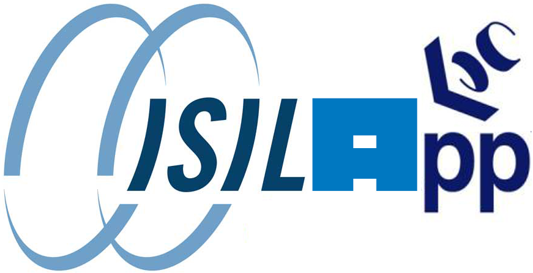

Isilapp
Extreme Cloud Storage on FreeBSD
(пара скриптов на shell и SQL)
исход
- медиа-сервис с типичным размером файла от 1 до 50 MB
- мастер данные от 100 TB до 1 PB
- стриминг данные от 50 до 200 TB
- стриминг полоса от 10 Gbit/s до 1 Tbit/s
надежды
- сохранность мастер данных
- безотказность и качество стриминга
- разумная TCO
логика капиталиста
- много дисковых полок
- эффективное кластерное хранилище
- CDN от вендора
- серверы доступа — отдельно
cluster storage solutions
- Isilon, NetApp, Panasas
- Exadata, EMC, HDS
- GPFS, PolyServe
тупичок вендора
- инфраструктура требует 3–4 решения
- негарантируемая скорость при экстремальных нагрузках
- крайняя сложность дебага и тюнинга
- стоимость raw TB в 10–30 раза выше consumer storage
pioneering
- server-integrated storage!
- (cloud storage)
cloud storage
- Google, Yandex, и почти все крупные интернет-компании
- гибкость, доступность дебага и тюнинга
- consumer hardware, стоимость raw TB в 1,5–3 раза выше consumer storage
cloud storage solutions
- HDFS, GFS, S3, (Lustre, …)
- сложности с большими расстояниями
- медленный стриминг, сложность кэширования
- сложность эксплуатации
почему FreeBSD?
- продвинутый, надежный storage: geom, UFS2, ZFS
- проверенный extreme streaming на nginx
- доступная коммерческая поддержка на уровне ядра
- промышленный опыт NetApp, Isilon, Panasas
почему UFS2?
- самая быстрая FS в мире
- 7 лет успешной эксплуатации
- ZFS сложна и пока медленна
почему HTTP?
- основной протокол внешнего доступа
- достаточно быстрый и простой для внутреннего обмена
унификация
- серверы и хранилище
- мастер и стриминг данные
- внешний и внутренний доступ
- кластерный и облачный (CDN) обмен
implementation decisions
- одна файловая система на диск
- никаких RAID, только JBOD
- распределённость на базе случайных чисел
слово о hardware
- шасси SuperMicro 4U 24 x 3.5"
- 2–6 x Intel Gigabit
- 24 x 2TB потребительские диски
- контроллеры LSI 1068 в режиме JBOD
данные
- имя файла — sha256 от его содержимого
- равномерно разнесены по 4096 (16^x) папкам
- диспетчер данных
мастер данные
- минимум на трёх шасси
- чуть позже — минимум в трёх ДЦ
стриминг данные
- минимум на трёх шасси
- во всех точках CDN
диспетчер данных
- PostgreSQL, sh, Python
- sha, hdd, chassis, rack, dc
- вид
sha—http://chassis/hdd/ доступен приложению
диспетчер данных²
- знает текущий статус всех объектов
- формирует из ручных и автоматических задач сценарии и запускает их
- единая точка автоматизации
- частичная multi-master архитектура
- self-healing
внутренний обмен
- nginx + fetch/wget/curl
- гибкая аутентификация
- быстрый fetcher в разработке
внутренний обмен²
- унифицирован между локальным и распределённым уровнями
- подстраивается под ширину каналов
внешний доступ
- nginx, secure link
- 100k+ потоков на шасси
Phoronix benchmarks
- linear local read/write: 100MB/s на диск, 2.4GB/s на шасси
- random local read: 20–40MB/s на диск, 480–960MB/s на шасси
- random HTTP get: 4–5Gbit/s на шасси без оптимизаций
high availability
- app-level next path retry
- актуальная информация о доступности в приложении
high availability²
- carp в пределах dc
- proxy store при выходе диска из строя
load balancing
- hardware balancers плохо подходят для тяжёлых данных
- app-level, geo-aware, status-aware balancing
масштабирование
- на новое шасси уходит несколько минут
- это можно автоматизировать
- plug-and-pray
стоимость
- примерно в 2,5 раза дороже жёсткого диска
- можно оптимизировать: пример backblaze
разработка
- рабочий прототип примерно за неделю
- совершенствование в режиме production благодаря high availability
надёжность
- случайная распределённость — равномерно распределённое восстановление избытычности
- жёсткий диск 2TB:
6 часов 4 минуты
- шасси 48TB:
55 часов 6 часов
- ЦОД 1PB:
10 дней 5 дней :'-(
- Земля 10PB:
3 месяца CLASSIFIED секунд
бесперебойность
- секунды при потере диска
- миллисекунды при потере шасси (carp)
- секунды при потере dc (app-level next-path)
недостатки¹
- кастомность
- велосипедность
- маленький bus factor
недостатки²
- сырость
- отсутствие сертификаций
преимущества¹
- гибкость
- производительность
- job security
преимущества²
- единственное унифицированное решение под задачи
облачные вопросы?
интересно? заходите к нам в гости знакомиться и оставайтесь делать будущее!
andrew@dreamindustries.ru